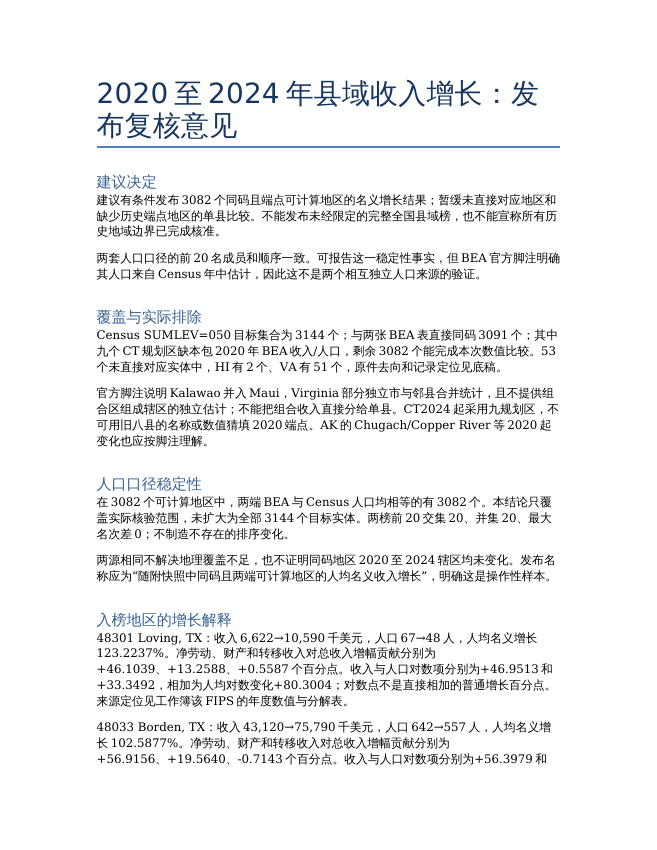

县域收入增长简报的发布复核
已改写并通过数值与文件一致性检查；参考答案和三模型尚未按新版评分，未认定正式通过。
完整题面
县域收入增长简报的发布复核
你在一家研究美国区域经济的机构负责数据复核。研究组拟发布2020年至2024年的县域人均收入增长简报，编辑需要知道：哪些地区可以进入本次比较、增长领先地区的判断是否依赖人口来源，以及哪些说法目前没有足够证据发布。请利用随附的BEA和美国人口普查局（Census）公开原件，交付可复核的数据底稿和中文发布意见。
这是基于真实公开数据新拟的研究委托，不代表原数据发布机构已经开展或认可本项研究。分析使用随附快照回顾2020至2024年，不要求还原每个历史时点当时能取得的数据。
工作目标
以Census人口原件中的县级实体为目标集合，核对它与两张BEA收入表及2020县代码表的对应关系。保留所有目标实体的处理去向：进入比较、无法直接对应，或虽能对应但缺少计算所需数据。说明统计地区组合、版本与年份范围如何影响可比性。不能仅凭同名或同码，宣称已经验证所有历史辖区边界不变。
分别使用BEA表内人口和Census人口，计算2020至2024年人均名义收入增长，形成两套前20名及其并集。说明人口来源是否改变入榜对象或名次，并量化实际差异；没有变化同样可以是研究发现。对榜单并集内各地区，解释收入来源的变化和人口分母变化分别起到什么作用。收入来源分解须可加总，人口影响可采用有明确含义的恒等式或反事实分解。分析不限定一种合法分解方法。
请据此提出具体发布决定：可以发布什么、必须限定什么范围或措辞、哪些比较应暂缓，以及补什么证据后才可重新判断。至少以实际入榜地区的数据支持收入来源和人口影响的解释。这里要求的是发布复核，不是仅列一组排名或通用风险声明。
随附材料
全部材料位于/app/input_files/，均为未经改写的官方原件。
| 文件 | 用途 |
|---|---|
CAINC1__ALL_AREAS.csv |
地区个人收入、人口及人均收入年度数据，含指标、单位、地区代码和年份 |
CAINC4__ALL_AREAS.csv |
地区收入来源及相关年度数据，用于收入总额核对和来源分解 |
co-est2024-alldata.csv |
Census县级人口估计，含统计层级、地区代码及逐年人口 |
national_county2020.txt |
2020县代码原表，用于地区标识和版本集合对照，不是完整历史边界交叉表 |
交付物
county_income_review.xlsx：提供目标实体覆盖与处理去向、2020和2024年比较所需原始数值、口径及单位、两套完整增长结果与前20名、榜单并集的收入来源贡献和人口影响，以及可定位到文件、地区、指标和年份的来源。排除记录要给出具体理由；关键数值要能依底稿复算。工作表名称和布局可自行安排。
publication_memo.docx：向研究负责人提交中文发布意见。区分可发布、需收窄和应暂缓的判断，引用底稿中的具体结果说明理由，并指出未决问题需要的补证。正文必须区分数据事实、算术分解和未经识别的原因；名义人均收入不能代替通胀调整后的购买力、收入分布或居民福利。
硬约束
只使用随附材料，不联网补入地域映射或缺失观测，不改写原件。所提补证和后续研究属于建议，不得声称已经取得、已经访谈或已经完成。
排名只纳入两端所需收入和对应人口可用、口径可以支持该项比较的对象；使用未四舍五入增长率降序，同值按五位地区代码升序。对有原件依据的更窄可比范围，应说明理由并按该范围完整重算。缺失值不得当作真实零；收入分项为零或负不自动等于地区不具备增长比较资格。
金额、人均数值和贡献必须标明单位及分母。采用合法替代分解时，说明方法、输入、算式及如何复核；无需复现某一份参考答案的工作表结构或措辞。
仅在/app/output/提交上述一份XLSX和一份DOCX，文件名逐字一致，不提交加密文件或压缩包。
输入原件
CAINC1__ALL_AREAS.csv
下载原件 · 4,314,454 bytes
| GeoFIPS | GeoName | LineCode | Unit | 2020 | 2024 |
|---|---|---|---|---|---|
| "00000" | United States | 1 | Thousands of dollars | 19613059000 | 24897613000 |
| "00000" | United States | 2 | Number of persons | 331577720 | 340110988 |
| "00000" | United States | 3 | Dollars | 59151 | 73204 |
| "01000" | Alabama | 1 | Thousands of dollars | 230878360 | 295590485 |
| "01000" | Alabama | 2 | Number of persons | 5033094 | 5157699 |
| "01000" | Alabama | 3 | Dollars | 45872 | 57311 |
CAINC4__ALL_AREAS.csv
下载原件 · 29,012,947 bytes
| GeoFIPS | GeoName | LineCode | Unit | 2020 | 2024 |
|---|---|---|---|---|---|
| "00000" | United States | 10 | Thousands of dollars | 19613059000 | 24897613000 |
| "00000" | United States | 11 | Thousands of dollars | 19528088000 | 24790284000 |
| "00000" | United States | 12 | Thousands of dollars | 84971000 | 107329000 |
| "00000" | United States | 20 | Number of persons | 331577720 | 340110988 |
| "00000" | United States | 30 | Dollars | 59151 | 73204 |
| "00000" | United States | 35 | Thousands of dollars | 13177632000 | 17039177000 |
co-est2024-alldata.csv
下载原件 · 1,769,182 bytes
| SUMLEV | STATE | COUNTY | CTYNAME | POPESTIMATE2020 | POPESTIMATE2024 |
|---|---|---|---|---|---|
| 040 | 01 | 000 | Alabama | 5033094 | 5157699 |
| 050 | 01 | 001 | Autauga County | 58909 | 61464 |
| 050 | 01 | 003 | Baldwin County | 233244 | 261608 |
| 050 | 01 | 005 | Barbour County | 24975 | 24358 |
| 050 | 01 | 007 | Bibb County | 22176 | 22258 |
| 050 | 01 | 009 | Blount County | 59110 | 60163 |
national_county2020.txt
下载原件 · 126,639 bytes
| STATE | STATEFP | COUNTYFP | COUNTYNAME |
|---|---|---|---|
| AL | 01 | 001 | Autauga County |
| AL | 01 | 003 | Baldwin County |
| AL | 01 | 005 | Barbour County |
| AL | 01 | 007 | Bibb County |
| AL | 01 | 009 | Blount County |
| AL | 01 | 011 | Bullock County |
参考产出
county_income_review.xlsx
口径说明 · 13 行 × 2 列
| 事项 | 说明 |
| 目标范围 | Census人口原件SUMLEV=050的县级记录；不是仅凭5位代码判断县 |
| 直接比较 | Census县级代码同时具有BEA两表同码记录；地理实体内容和历史版本仍须审查，不暗示辖区从未变化 |
| 排名条件 | 两端总收入、两套人口为正且可用，两张收入表总额一致；收入分项可为零或负，不能据此删除县 |
| 单位 | BEA个人总收入及收入分项为千美元；重算人均收入乘1000转换美元 |
| 贡献 | 分项增量/2020总收入×100，单位百分点；允许负贡献，不是分项自身增长率 |
| 人口影响 | ln(末期人均/基期人均)=ln(末期收入/基期收入)-ln(末期人口/基期人口)，分别用两个人口来源 |
| 版本 | 保留2020代码表与当前人口原件集合差异，不用旧表否定当前人口原件，也不按名称补映射 |
| 记录编号 | CSV按解析记录计数，表头为1；不保证等于物理文本行号 |
| 名义口径 | 无平减指数，不推断实际购买力或因果关系 |
| 可比性声明 | 全部可比增长表的范围仅指同码且两端数值可计算；未证明全部历史边界不变，不是完整全国县域排名。 |
| 人口来源相关性 | CAINC1官方脚注1说明人口来自Census年中估计；两套表人口相同不能视为两个独立机构的交叉验证。 |
| 官方地域事实 | 官方脚注明确HI和VA组合地区、CT2024起九规划区及AK2020起新县等；代码表的集合差异不是一份完整的历史边界映射。 |
指标定义 · 8 行 × 5 列
| 表 | LineCode | 原始说明 | 单位 | 来源记录 |
| CAINC1 | 1 | Personal income (thousands of dollars) | Thousands of dollars | 2 |
| CAINC1 | 2 | Population (persons) 1/ | Number of persons | 3 |
| CAINC1 | 3 | Per capita personal income (dollars) 2/ | Dollars | 4 |
| CAINC4 | 10 | Personal income (thousands of dollars) | Thousands of dollars | 2 |
| CAINC4 | 45 | Equals: Net earnings by place of residence | Thousands of dollars | 12 |
| CAINC4 | 46 | Plus: Dividends, interest, and rent 7/ | Thousands of dollars | 13 |
| CAINC4 | 47 | Plus: Personal current transfer receipts | Thousands of dollars | 14 |
地域双向覆盖 · 3355 行 × 8 列
| FIPS | Census县 | BEA1 | BEA4 | 2020县码 | 直接匹配 | Census名称 | BEA名称 |
| 00000 | False | True | True | False | False | United States | |
| 01000 | False | True | True | False | False | Alabama | |
| 01001 | True | True | True | True | True | Autauga County | Autauga, AL |
| 01003 | True | True | True | True | True | Baldwin County | Baldwin, AL |
| 01005 | True | True | True | True | True | Barbour County | Barbour, AL |
| 01007 | True | True | True | True | True | Bibb County | Bibb, AL |
| 01009 | True | True | True | True | True | Blount County | Blount, AL |
| 01011 | True | True | True | True | True | Bullock County | Bullock, AL |
| 01013 | True | True | True | True | True | Butler County | Butler, AL |
| 01015 | True | True | True | True | True | Calhoun County | Calhoun, AL |
| 01017 | True | True | True | True | True | Chambers County | Chambers, AL |
| 01019 | True | True | True | True | True | Cherokee County | Cherokee, AL |
| 01021 | True | True | True | True | True | Chilton County | Chilton, AL |
| 01023 | True | True | True | True | True | Choctaw County | Choctaw, AL |
| 01025 | True | True | True | True | True | Clarke County | Clarke, AL |
| 01027 | True | True | True | True | True | Clay County | Clay, AL |
| 01029 | True | True | True | True | True | Cleburne County | Cleburne, AL |
| 01031 | True | True | True | True | True | Coffee County | Coffee, AL |
| 01033 | True | True | True | True | True | Colbert County | Colbert, AL |
| 01035 | True | True | True | True | True | Conecuh County | Conecuh, AL |
年度数值核对 · 15456 行 × 12 列
| FIPS | year | CAINC1总收入千USD | CAINC4总收入千USD | BEA人口 | Census人口 | 发布人均USD | BEA重算人均USD | Census重算人均USD | 发布值舍入残差USD | 收入分项残差千USD | 来源记录 |
| 01001 | 2020 | 2656173 | 2656173 | 58909 | 58909 | 45089 | 45089.42606392911 | 45089.42606392911 | -0.4260639291110017 | 0 | {"cainc1_income": 8, "cainc1_population": 9, "cainc1_pc": 10, "cainc4_income": 42, "census": 3, "cainc4_45": 52, "cainc4_46": 53, "cainc4_47": 54} |
| 01001 | 2021 | 2915364 | 2915364 | 59191 | 59191 | 49254 | 49253.50137689852 | 49253.50137689852 | 0.498623101485023 | 0 | {"cainc1_income": 8, "cainc1_population": 9, "cainc1_pc": 10, "cainc4_income": 42, "census": 3, "cainc4_45": 52, "cainc4_46": 53, "cainc4_47": 54} |
| 01001 | 2022 | 2979576 | 2979576 | 59736 | 59736 | 49879 | 49879.06789875452 | 49879.06789875452 | -0.0678987545198875 | 0 | {"cainc1_income": 8, "cainc1_population": 9, "cainc1_pc": 10, "cainc4_income": 42, "census": 3, "cainc4_45": 52, "cainc4_46": 53, "cainc4_47": 54} |
| 01001 | 2023 | 3202452 | 3202452 | 60436 | 60436 | 52989 | 52989.14554239195 | 52989.14554239195 | -0.1455423919518168 | 0 | {"cainc1_income": 8, "cainc1_population": 9, "cainc1_pc": 10, "cainc4_income": 42, "census": 3, "cainc4_45": 52, "cainc4_46": 53, "cainc4_47": 54} |
| 01001 | 2024 | 3424189 | 3424189 | 61464 | 61464 | 55710 | 55710.48093192763 | 55710.48093192763 | -0.4809319276324353 | 0 | {"cainc1_income": 8, "cainc1_population": 9, "cainc1_pc": 10, "cainc4_income": 42, "census": 3, "cainc4_45": 52, "cainc4_46": 53, "cainc4_47": 54} |
| 01003 | 2020 | 11880306 | 11880306 | 233244 | 233244 | 50935 | 50935.098008952 | 50935.098008952 | -0.09800895199876525 | 0 | {"cainc1_income": 11, "cainc1_population": 12, "cainc1_pc": 13, "cainc4_income": 62, "census": 4, "cainc4_45": 72, "cainc4_46": 73, "cainc4_47": 74} |
| 01003 | 2021 | 13527772 | 13527772 | 239411 | 239411 | 56504 | 56504.38785185309 | 56504.38785185309 | -0.387851853089457 | 0 | {"cainc1_income": 11, "cainc1_population": 12, "cainc1_pc": 13, "cainc4_income": 62, "census": 4, "cainc4_45": 72, "cainc4_46": 73, "cainc4_47": 74} |
| 01003 | 2022 | 14232715 | 14232715 | 246577 | 246577 | 57721 | 57721.17837430093 | 57721.17837430093 | -0.1783743009283104 | 0 | {"cainc1_income": 11, "cainc1_population": 12, "cainc1_pc": 13, "cainc4_income": 62, "census": 4, "cainc4_45": 72, "cainc4_46": 73, "cainc4_47": 74} |
| 01003 | 2023 | 15590410 | 15590410 | 254107 | 254107 | 61354 | 61353.7210702578 | 61353.7210702578 | 0.278929742195217 | 0 | {"cainc1_income": 11, "cainc1_population": 12, "cainc1_pc": 13, "cainc4_income": 62, "census": 4, "cainc4_45": 72, "cainc4_46": 73, "cainc4_47": 74} |
| 01003 | 2024 | 16718173 | 16718173 | 261608 | 261608 | 63905 | 63905.43484908719 | 63905.43484908719 | -0.4348490871838782 | 0 | {"cainc1_income": 11, "cainc1_population": 12, "cainc1_pc": 13, "cainc4_income": 62, "census": 4, "cainc4_45": 72, "cainc4_46": 73, "cainc4_47": 74} |
| 01005 | 2020 | 926313 | 926313 | 24975 | 24975 | 37090 | 37089.60960960961 | 37089.60960960961 | 0.3903903903903904 | 0 | {"cainc1_income": 14, "cainc1_population": 15, "cainc1_pc": 16, "cainc4_income": 82, "census": 5, "cainc4_45": 92, "cainc4_46": 93, "cainc4_47": 94} |
| 01005 | 2021 | 1006722 | 1006722 | 24517 | 24517 | 41062 | 41062.20173756985 | 41062.20173756985 | -0.2017375698494922 | 0 | {"cainc1_income": 14, "cainc1_population": 15, "cainc1_pc": 16, "cainc4_income": 82, "census": 5, "cainc4_45": 92, "cainc4_46": 93, "cainc4_47": 94} |
| 01005 | 2022 | 1014902 | 1014902 | 24722 | 24722 | 41053 | 41052.58474233477 | 41052.58474233477 | 0.4152576652374403 | 0 | {"cainc1_income": 14, "cainc1_population": 15, "cainc1_pc": 16, "cainc4_income": 82, "census": 5, "cainc4_45": 92, "cainc4_46": 93, "cainc4_47": 94} |
| 01005 | 2023 | 1033178 | 1033178 | 24644 | 24644 | 41924 | 41924.11946112644 | 41924.11946112644 | -0.1194611264405129 | 0 | {"cainc1_income": 14, "cainc1_population": 15, "cainc1_pc": 16, "cainc4_income": 82, "census": 5, "cainc4_45": 92, "cainc4_46": 93, "cainc4_47": 94} |
| 01005 | 2024 | 1093828 | 1093828 | 24358 | 24358 | 44906 | 44906.31414730274 | 44906.31414730274 | -0.3141473027342147 | 0 | {"cainc1_income": 14, "cainc1_population": 15, "cainc1_pc": 16, "cainc4_income": 82, "census": 5, "cainc4_45": 92, "cainc4_46": 93, "cainc4_47": 94} |
| 01007 | 2020 | 773029 | 773029 | 22176 | 22176 | 34859 | 34858.81132756133 | 34858.81132756133 | 0.1886724386724387 | 0 | {"cainc1_income": 17, "cainc1_population": 18, "cainc1_pc": 19, "cainc4_income": 102, "census": 6, "cainc4_45": 112, "cainc4_46": 113, "cainc4_47": 114} |
| 01007 | 2021 | 836565 | 836565 | 22344 | 22344 | 37440 | 37440.25241675618 | 37440.25241675618 | -0.2524167561761547 | 0 | {"cainc1_income": 17, "cainc1_population": 18, "cainc1_pc": 19, "cainc4_income": 102, "census": 6, "cainc4_45": 112, "cainc4_46": 113, "cainc4_47": 114} |
| 01007 | 2022 | 840465 | 840465 | 21983 | 21983 | 38232 | 38232.49783923941 | 38232.49783923941 | -0.4978392394122731 | 0 | {"cainc1_income": 17, "cainc1_population": 18, "cainc1_pc": 19, "cainc4_income": 102, "census": 6, "cainc4_45": 112, "cainc4_46": 113, "cainc4_47": 114} |
| 01007 | 2023 | 886174 | 886174 | 21890 | 21890 | 40483 | 40483.05162174509 | 40483.05162174509 | -0.05162174508908177 | 0 | {"cainc1_income": 17, "cainc1_population": 18, "cainc1_pc": 19, "cainc4_income": 102, "census": 6, "cainc4_45": 112, "cainc4_46": 113, "cainc4_47": 114} |
| 01007 | 2024 | 933750 | 933750 | 22258 | 22258 | 41951 | 41951.20855422769 | 41951.20855422769 | -0.2085542276934136 | 0 | {"cainc1_income": 17, "cainc1_population": 18, "cainc1_pc": 19, "cainc4_income": 102, "census": 6, "cainc4_45": 112, "cainc4_46": 113, "cainc4_47": 114} |
排除与未完成项 · 63 行 × 4 列
| FIPS | 类型 | 原因 | 来源记录 |
| 15005 | not_directly_comparable | 缺少BEA直接同码记录；不得按县名或自行拆分合并地区 | 564 |
| 15009 | not_directly_comparable | 缺少BEA直接同码记录；不得按县名或自行拆分合并地区 | 566 |
| 51003 | not_directly_comparable | 缺少BEA直接同码记录；不得按县名或自行拆分合并地区 | 2872 |
| 51005 | not_directly_comparable | 缺少BEA直接同码记录；不得按县名或自行拆分合并地区 | 2873 |
| 51015 | not_directly_comparable | 缺少BEA直接同码记录；不得按县名或自行拆分合并地区 | 2878 |
| 51031 | not_directly_comparable | 缺少BEA直接同码记录；不得按县名或自行拆分合并地区 | 2886 |
| 51035 | not_directly_comparable | 缺少BEA直接同码记录；不得按县名或自行拆分合并地区 | 2888 |
| 51053 | not_directly_comparable | 缺少BEA直接同码记录；不得按县名或自行拆分合并地区 | 2897 |
| 51059 | not_directly_comparable | 缺少BEA直接同码记录；不得按县名或自行拆分合并地区 | 2899 |
| 51069 | not_directly_comparable | 缺少BEA直接同码记录；不得按县名或自行拆分合并地区 | 2904 |
| 51081 | not_directly_comparable | 缺少BEA直接同码记录；不得按县名或自行拆分合并地区 | 2910 |
| 51089 | not_directly_comparable | 缺少BEA直接同码记录；不得按县名或自行拆分合并地区 | 2914 |
| 51095 | not_directly_comparable | 缺少BEA直接同码记录；不得按县名或自行拆分合并地区 | 2917 |
| 51121 | not_directly_comparable | 缺少BEA直接同码记录；不得按县名或自行拆分合并地区 | 2930 |
| 51143 | not_directly_comparable | 缺少BEA直接同码记录；不得按县名或自行拆分合并地区 | 2939 |
| 51149 | not_directly_comparable | 缺少BEA直接同码记录；不得按县名或自行拆分合并地区 | 2942 |
| 51153 | not_directly_comparable | 缺少BEA直接同码记录；不得按县名或自行拆分合并地区 | 2943 |
| 51161 | not_directly_comparable | 缺少BEA直接同码记录；不得按县名或自行拆分合并地区 | 2947 |
| 51163 | not_directly_comparable | 缺少BEA直接同码记录；不得按县名或自行拆分合并地区 | 2948 |
| 51165 | not_directly_comparable | 缺少BEA直接同码记录；不得按县名或自行拆分合并地区 | 2949 |
全部可比增长 · 3083 行 × 9 列
| FIPS | 名称 | 总收入增长百分比 | BEA人均增长百分比 | Census人均增长百分比 | BEA排名 | Census排名 | 非正分项 | 来源记录 |
| 01001 | Autauga, AL | 28.91438170631205 | 23.55553351453105 | 23.55553351453105 | 1028 | 1028 | False | {"cainc1_income": 8, "cainc1_population": 9, "cainc1_pc": 10, "cainc4_income": 42, "census": 3, "cainc4_45": 52, "cainc4_46": 53, "cainc4_47": 54} |
| 01003 | Baldwin, AL | 40.72173730205266 | 25.46443876058825 | 25.46443876058825 | 708 | 708 | False | {"cainc1_income": 11, "cainc1_population": 12, "cainc1_pc": 13, "cainc4_income": 62, "census": 4, "cainc4_45": 72, "cainc4_46": 73, "cainc4_47": 74} |
| 01005 | Barbour, AL | 18.08406013949928 | 21.07518687839702 | 21.07518687839702 | 1554 | 1554 | False | {"cainc1_income": 14, "cainc1_population": 15, "cainc1_pc": 16, "cainc4_income": 82, "census": 5, "cainc4_45": 92, "cainc4_46": 93, "cainc4_47": 94} |
| 01007 | Bibb, AL | 20.79106993398695 | 20.34606734010669 | 20.34606734010669 | 1712 | 1712 | False | {"cainc1_income": 17, "cainc1_population": 18, "cainc1_pc": 19, "cainc4_income": 102, "census": 6, "cainc4_45": 112, "cainc4_46": 113, "cainc4_47": 114} |
| 01009 | Blount, AL | 30.74453244895072 | 28.45618258825985 | 28.45618258825985 | 395 | 395 | False | {"cainc1_income": 20, "cainc1_population": 21, "cainc1_pc": 22, "cainc4_income": 122, "census": 7, "cainc4_45": 132, "cainc4_46": 133, "cainc4_47": 134} |
| 01011 | Bullock, AL | 23.9267233574857 | 28.04468032997462 | 28.04468032997462 | 424 | 424 | False | {"cainc1_income": 23, "cainc1_population": 24, "cainc1_pc": 25, "cainc4_income": 142, "census": 8, "cainc4_45": 152, "cainc4_46": 153, "cainc4_47": 154} |
| 01013 | Butler, AL | 29.45113663867737 | 34.91820644303868 | 34.91820644303868 | 125 | 125 | False | {"cainc1_income": 26, "cainc1_population": 27, "cainc1_pc": 28, "cainc4_income": 162, "census": 9, "cainc4_45": 172, "cainc4_46": 173, "cainc4_47": 174} |
| 01015 | Calhoun, AL | 19.73228466209683 | 19.54203263582726 | 19.54203263582726 | 1886 | 1886 | False | {"cainc1_income": 29, "cainc1_population": 30, "cainc1_pc": 31, "cainc4_income": 182, "census": 10, "cainc4_45": 192, "cainc4_46": 193, "cainc4_47": 194} |
| 01017 | Chambers, AL | 19.10730761430597 | 21.78090790056446 | 21.78090790056446 | 1413 | 1413 | False | {"cainc1_income": 32, "cainc1_population": 33, "cainc1_pc": 34, "cainc4_income": 202, "census": 11, "cainc4_45": 212, "cainc4_46": 213, "cainc4_47": 214} |
| 01019 | Cherokee, AL | 25.76768489954855 | 20.20057144676801 | 20.20057144676801 | 1743 | 1743 | False | {"cainc1_income": 35, "cainc1_population": 36, "cainc1_pc": 37, "cainc4_income": 222, "census": 12, "cainc4_45": 232, "cainc4_46": 233, "cainc4_47": 234} |
| 01021 | Chilton, AL | 31.83322314604582 | 25.69093637511795 | 25.69093637511795 | 665 | 665 | False | {"cainc1_income": 38, "cainc1_population": 39, "cainc1_pc": 40, "cainc4_income": 242, "census": 13, "cainc4_45": 252, "cainc4_46": 253, "cainc4_47": 254} |
| 01023 | Choctaw, AL | 15.82841567238015 | 21.30652693468156 | 21.30652693468156 | 1519 | 1519 | False | {"cainc1_income": 41, "cainc1_population": 42, "cainc1_pc": 43, "cainc4_income": 262, "census": 14, "cainc4_45": 272, "cainc4_46": 273, "cainc4_47": 274} |
| 01025 | Clarke, AL | 15.84803654277967 | 20.27958233592096 | 20.27958233592096 | 1727 | 1727 | False | {"cainc1_income": 44, "cainc1_population": 45, "cainc1_pc": 46, "cainc4_income": 282, "census": 15, "cainc4_45": 292, "cainc4_46": 293, "cainc4_47": 294} |
| 01027 | Clay, AL | 20.58729004551608 | 20.3416947501077 | 20.3416947501077 | 1716 | 1716 | False | {"cainc1_income": 47, "cainc1_population": 48, "cainc1_pc": 49, "cainc4_income": 302, "census": 16, "cainc4_45": 312, "cainc4_46": 313, "cainc4_47": 314} |
| 01029 | Cleburne, AL | 31.60353307482991 | 24.63653056939094 | 24.63653056939094 | 827 | 827 | False | {"cainc1_income": 50, "cainc1_population": 51, "cainc1_pc": 52, "cainc4_income": 322, "census": 17, "cainc4_45": 332, "cainc4_46": 333, "cainc4_47": 334} |
| 01031 | Coffee, AL | 32.34616614857678 | 25.78733080926425 | 25.78733080926425 | 652 | 652 | False | {"cainc1_income": 53, "cainc1_population": 54, "cainc1_pc": 55, "cainc4_income": 342, "census": 18, "cainc4_45": 352, "cainc4_46": 353, "cainc4_47": 354} |
| 01033 | Colbert, AL | 24.09369901530092 | 20.9694551683562 | 20.9694551683562 | 1572 | 1572 | False | {"cainc1_income": 56, "cainc1_population": 57, "cainc1_pc": 58, "cainc4_income": 362, "census": 19, "cainc4_45": 372, "cainc4_46": 373, "cainc4_47": 374} |
| 01035 | Conecuh, AL | 18.32923178937832 | 23.03726315591944 | 23.03726315591944 | 1127 | 1127 | False | {"cainc1_income": 59, "cainc1_population": 60, "cainc1_pc": 61, "cainc4_income": 382, "census": 20, "cainc4_45": 392, "cainc4_46": 393, "cainc4_47": 394} |
| 01037 | Coosa, AL | 22.0893299576231 | 22.67065122551967 | 22.67065122551967 | 1209 | 1209 | False | {"cainc1_income": 62, "cainc1_population": 63, "cainc1_pc": 64, "cainc4_income": 402, "census": 21, "cainc4_45": 412, "cainc4_46": 413, "cainc4_47": 414} |
| 01039 | Covington, AL | 25.3115112883452 | 24.53138505244499 | 24.53138505244499 | 835 | 835 | False | {"cainc1_income": 65, "cainc1_population": 66, "cainc1_pc": 67, "cainc4_income": 422, "census": 22, "cainc4_45": 432, "cainc4_46": 433, "cainc4_47": 434} |
两榜前20并集 · 21 行 × 7 列
| FIPS | 名称 | BEA排名 | Census排名 | BEA人均增长百分比 | Census人均增长百分比 | 来源记录 |
| 02230 | Skagway Municipality, AK* | 9 | 9 | 72.1692788102463 | 72.1692788102463 | {"cainc1_income": 293, "cainc1_population": 294, "cainc1_pc": 295, "cainc4_income": 1942, "census": 96, "cainc4_45": 1952, "cainc4_46": 1953, "cainc4_47": 1954} |
| 08017 | Cheyenne, CO | 14 | 14 | 69.40008290984778 | 69.40008290984778 | {"cainc1_income": 860, "cainc1_population": 861, "cainc1_pc": 862, "cainc4_income": 5722, "census": 262, "cainc4_45": 5732, "cainc4_46": 5733, "cainc4_47": 5734} |
| 08097 | Pitkin, CO | 15 | 15 | 68.42529816446579 | 68.42529816446579 | {"cainc1_income": 980, "cainc1_population": 981, "cainc1_pc": 982, "cainc4_income": 6522, "census": 302, "cainc4_45": 6532, "cainc4_46": 6533, "cainc4_47": 6534} |
| 16013 | Blaine, ID | 20 | 20 | 62.35081194055643 | 62.35081194055643 | {"cainc1_income": 1817, "cainc1_population": 1818, "cainc1_pc": 1819, "cainc4_income": 12102, "census": 574, "cainc4_45": 12112, "cainc4_46": 12113, "cainc4_47": 12114} |
| 19037 | Chickasaw, IA | 12 | 12 | 70.10844621463035 | 70.10844621463035 | {"cainc1_income": 2576, "cainc1_population": 2577, "cainc1_pc": 2578, "cainc4_income": 17162, "census": 827, "cainc4_45": 17172, "cainc4_46": 17173, "cainc4_47": 17174} |
| 19131 | Mitchell, IA | 11 | 11 | 70.12340999599539 | 70.12340999599539 | {"cainc1_income": 2717, "cainc1_population": 2718, "cainc1_pc": 2719, "cainc4_income": 18102, "census": 874, "cainc4_45": 18112, "cainc4_46": 18113, "cainc4_47": 18114} |
| 31099 | Kearney, NE | 19 | 19 | 63.01949455691933 | 63.01949455691933 | {"cainc1_income": 5300, "cainc1_population": 5301, "cainc1_pc": 5302, "cainc4_income": 35322, "census": 1735, "cainc4_45": 35332, "cainc4_46": 35333, "cainc4_47": 35334} |
| 31139 | Pierce, NE | 5 | 5 | 87.6733144570439 | 87.6733144570439 | {"cainc1_income": 5360, "cainc1_population": 5361, "cainc1_pc": 5362, "cainc4_income": 35722, "census": 1755, "cainc4_45": 35732, "cainc4_46": 35733, "cainc4_47": 35734} |
| 40147 | Washington, OK | 3 | 3 | 99.20310435603407 | 99.20310435603407 | {"cainc1_income": 6830, "cainc1_population": 6831, "cainc1_pc": 6832, "cainc4_income": 45522, "census": 2245, "cainc4_45": 45532, "cainc4_46": 45533, "cainc4_47": 45534} |
| 46079 | Lake, SD | 17 | 17 | 64.70389382935055 | 64.70389382935055 | {"cainc1_income": 7433, "cainc1_population": 7434, "cainc1_pc": 7435, "cainc4_income": 49542, "census": 2446, "cainc4_45": 49552, "cainc4_46": 49553, "cainc4_47": 49554} |
| 46125 | Turner, SD | 16 | 16 | 65.03895854368395 | 65.03895854368395 | {"cainc1_income": 7502, "cainc1_population": 7503, "cainc1_pc": 7504, "cainc4_income": 50002, "census": 2469, "cainc4_45": 50012, "cainc4_46": 50013, "cainc4_47": 50014} |
| 48033 | Borden, TX | 2 | 2 | 102.5876598395193 | 102.5876598395193 | {"cainc1_income": 7856, "cainc1_population": 7857, "cainc1_pc": 7858, "cainc4_income": 52362, "census": 2587, "cainc4_45": 52372, "cainc4_46": 52373, "cainc4_47": 52374} |
| 48101 | Cottle, TX | 4 | 4 | 94.47757713900285 | 94.47757713900285 | {"cainc1_income": 7958, "cainc1_population": 7959, "cainc1_pc": 7960, "cainc4_income": 53042, "census": 2621, "cainc4_45": 53052, "cainc4_46": 53053, "cainc4_47": 53054} |
| 48269 | King, TX | 18 | 18 | 63.71546649809564 | 63.71546649809564 | {"cainc1_income": 8210, "cainc1_population": 8211, "cainc1_pc": 8212, "cainc4_income": 54722, "census": 2705, "cainc4_45": 54732, "cainc4_46": 54733, "cainc4_47": 54734} |
| 48301 | Loving, TX | 1 | 1 | 123.2237239504681 | 123.2237239504681 | {"cainc1_income": 8258, "cainc1_population": 8259, "cainc1_pc": 8260, "cainc4_income": 55042, "census": 2721, "cainc4_45": 55052, "cainc4_46": 55053, "cainc4_47": 55054} |
| 48311 | McMullen, TX | 13 | 13 | 69.83811536800432 | 69.83811536800432 | {"cainc1_income": 8273, "cainc1_population": 8274, "cainc1_pc": 8275, "cainc4_income": 55142, "census": 2726, "cainc4_45": 55152, "cainc4_46": 55153, "cainc4_47": 55154} |
| 48389 | Reeves, TX | 6 | 6 | 82.43023379140949 | 82.43023379140949 | {"cainc1_income": 8390, "cainc1_population": 8391, "cainc1_pc": 8392, "cainc4_income": 55922, "census": 2765, "cainc4_45": 55932, "cainc4_46": 55933, "cainc4_47": 55934} |
| 48461 | Upton, TX | 8 | 8 | 74.94339846376897 | 74.94339846376897 | {"cainc1_income": 8498, "cainc1_population": 8499, "cainc1_pc": 8500, "cainc4_income": 56642, "census": 2801, "cainc4_45": 56652, "cainc4_46": 56653, "cainc4_47": 56654} |
| 49043 | Summit, UT | 10 | 10 | 71.27325531375607 | 71.27325531375607 | {"cainc1_income": 8636, "cainc1_population": 8637, "cainc1_pc": 8638, "cainc4_income": 57562, "census": 2847, "cainc4_45": 57572, "cainc4_46": 57573, "cainc4_47": 57574} |
| 56039 | Teton, WY | 7 | 7 | 78.45237894549079 | 78.45237894549079 | {"cainc1_income": 9593, "cainc1_population": 9594, "cainc1_pc": 9595, "cainc4_income": 63942, "census": 3193, "cainc4_45": 63952, "cainc4_46": 63953, "cainc4_47": 63954} |
增长来源与人口影响 · 21 行 × 8 列
| FIPS | 净劳动贡献pp | 财产收入贡献pp | 转移收入贡献pp | 收入log变化 | BEA人口log变化 | Census人口log变化 | 来源记录 |
| 02230 | 53.63604756275642 | 5.091440094569223 | -3.35859815033725 | 0.4406320356807911 | -0.1026759502871573 | -0.1026759502871573 | {"cainc1_income": 293, "cainc1_population": 294, "cainc1_pc": 295, "cainc4_income": 1942, "census": 96, "cainc4_45": 1952, "cainc4_46": 1953, "cainc4_47": 1954} |
| 08017 | 52.77038055149901 | 6.782676991421945 | 6.548283775326126 | 0.5074279059642781 | -0.01966517969786015 | -0.01966517969786015 | {"cainc1_income": 860, "cainc1_population": 861, "cainc1_pc": 862, "cainc4_income": 5722, "census": 262, "cainc4_45": 5732, "cainc4_46": 5733, "cainc4_47": 5734} |
| 08097 | 17.68042051454211 | 44.61933362578832 | -0.8772239156714028 | 0.4788551525756413 | -0.04246697859144789 | -0.04246697859144789 | {"cainc1_income": 980, "cainc1_population": 981, "cainc1_pc": 982, "cainc4_income": 6522, "census": 302, "cainc4_45": 6532, "cainc4_46": 6533, "cainc4_47": 6534} |
| 16013 | 11.98436192699292 | 55.6841722768484 | 0.7908562430839575 | 0.5215245285079502 | 0.03693521478595408 | 0.03693521478595408 | {"cainc1_income": 1817, "cainc1_population": 1818, "cainc1_pc": 1819, "cainc4_income": 12102, "census": 574, "cainc4_45": 12112, "cainc4_46": 12113, "cainc4_47": 12114} |
| 19037 | 57.06214440342019 | 6.898830661861248 | 2.37201460424322 | 0.508821554978101 | -0.02244441160988234 | -0.02244441160988234 | {"cainc1_income": 2576, "cainc1_population": 2577, "cainc1_pc": 2578, "cainc4_income": 17162, "census": 827, "cainc4_45": 17172, "cainc4_46": 17173, "cainc4_47": 17174} |
| 19131 | 61.06937555942093 | 6.871284504101466 | 2.921997699317486 | 0.5356898768224061 | 0.004335947975148477 | 0.004335947975148477 | {"cainc1_income": 2717, "cainc1_population": 2718, "cainc1_pc": 2719, "cainc4_income": 18102, "census": 874, "cainc4_45": 18112, "cainc4_46": 18113, "cainc4_47": 18114} |
| 31099 | 48.7725180914581 | 11.62594612032622 | 4.009570570739373 | 0.4971811688127389 | 0.008481562636691843 | 0.008481562636691843 | {"cainc1_income": 5300, "cainc1_population": 5301, "cainc1_pc": 5302, "cainc4_income": 35322, "census": 1735, "cainc4_45": 35332, "cainc4_46": 35333, "cainc4_47": 35334} |
| 31139 | 80.2892571350849 | 5.001246797996056 | 2.127264071815564 | 0.6281699925815908 | -0.001362583669055103 | -0.001362583669055103 | {"cainc1_income": 5360, "cainc1_population": 5361, "cainc1_pc": 5362, "cainc4_income": 35722, "census": 1755, "cainc4_45": 35732, "cainc4_46": 35733, "cainc4_47": 35734} |
| 40147 | 95.73343299839777 | 4.885141689603673 | 4.09039047732575 | 0.716419102326495 | 0.02726435916888266 | 0.02726435916888266 | {"cainc1_income": 6830, "cainc1_population": 6831, "cainc1_pc": 6832, "cainc4_income": 45522, "census": 2245, "cainc4_45": 45532, "cainc4_46": 45533, "cainc4_47": 45534} |
| 46079 | 50.26640453189946 | 10.96878562135151 | 3.319190337474526 | 0.4980709100783767 | -0.0009081827887866498 | -0.0009081827887866498 | {"cainc1_income": 7433, "cainc1_population": 7434, "cainc1_pc": 7435, "cainc4_income": 49542, "census": 2446, "cainc4_45": 49552, "cainc4_46": 49553, "cainc4_47": 49554} |
| 46125 | 62.78707442543678 | 6.38219408251169 | 3.488918953075697 | 0.5461436590288898 | 0.04513228660057984 | 0.04513228660057984 | {"cainc1_income": 7502, "cainc1_population": 7503, "cainc1_pc": 7504, "cainc4_income": 50002, "census": 2469, "cainc4_45": 50012, "cainc4_46": 50013, "cainc4_47": 50014} |
| 48033 | 56.91558441558441 | 19.56400742115028 | -0.7142857142857143 | 0.563979431223196 | -0.1420230637626771 | -0.1420230637626771 | {"cainc1_income": 7856, "cainc1_population": 7857, "cainc1_pc": 7858, "cainc4_income": 52362, "census": 2587, "cainc4_45": 52372, "cainc4_46": 52373, "cainc4_47": 52374} |
| 48101 | 78.52264381884945 | -0.5030599755201959 | 2.057527539779682 | 0.5882149697393332 | -0.07693171605291635 | -0.07693171605291635 | {"cainc1_income": 7958, "cainc1_population": 7959, "cainc1_pc": 7960, "cainc4_income": 53042, "census": 2621, "cainc4_45": 53052, "cainc4_46": 53053, "cainc4_47": 53054} |
| 48269 | 33.10112461867686 | 0.2731867231252561 | -1.543504985657697 | 0.2763491443992364 | -0.2166106302725868 | -0.2166106302725868 | {"cainc1_income": 8210, "cainc1_population": 8211, "cainc1_pc": 8212, "cainc4_income": 54722, "census": 2705, "cainc4_45": 54732, "cainc4_46": 54733, "cainc4_47": 54734} |
| 48301 | 46.1038961038961 | 13.25883418906675 | 0.558743581999396 | 0.4695127204882606 | -0.3334916084830752 | -0.3334916084830752 | {"cainc1_income": 8258, "cainc1_population": 8259, "cainc1_pc": 8260, "cainc4_income": 55042, "census": 2721, "cainc4_45": 55052, "cainc4_46": 55053, "cainc4_47": 55054} |
| 48311 | 17.46807542106902 | 40.07043772011787 | 3.196051654328087 | 0.4745841525848404 | -0.05509138224616111 | -0.05509138224616111 | {"cainc1_income": 8273, "cainc1_population": 8274, "cainc1_pc": 8275, "cainc4_income": 55142, "census": 2726, "cainc4_45": 55152, "cainc4_46": 55153, "cainc4_47": 55154} |
| 48389 | 39.17523377044084 | 8.2992319749444 | 0.2189169205202291 | 0.3899682000127794 | -0.211229433338805 | -0.211229433338805 | {"cainc1_income": 8390, "cainc1_population": 8391, "cainc1_pc": 8392, "cainc4_income": 55922, "census": 2765, "cainc4_45": 55932, "cainc4_46": 55933, "cainc4_47": 55934} |
| 48461 | 59.93568351434985 | 4.72941293279865 | 1.009426833102581 | 0.5048549745428024 | -0.05443732372558792 | -0.05443732372558792 | {"cainc1_income": 8498, "cainc1_population": 8499, "cainc1_pc": 8500, "cainc4_income": 56642, "census": 2801, "cainc4_45": 56652, "cainc4_46": 56653, "cainc4_47": 56654} |
| 49043 | 24.0215287109361 | 48.94621415175011 | 0.8210946875247013 | 0.5526707989475543 | 0.01458071956036025 | 0.01458071956036025 | {"cainc1_income": 8636, "cainc1_population": 8637, "cainc1_pc": 8638, "cainc4_income": 57562, "census": 2847, "cainc4_45": 57572, "cainc4_46": 57573, "cainc4_47": 57574} |
| 56039 | 13.13049411896117 | 64.48352328178221 | -0.01635392060901886 | 0.5743504884031118 | -0.004801106616044265 | -0.004801106616044265 | {"cainc1_income": 9593, "cainc1_population": 9594, "cainc1_pc": 9595, "cainc4_income": 63942, "census": 3193, "cainc4_45": 63952, "cainc4_46": 63953, "cainc4_47": 63954} |
负或零分项仍有效 · 2 行 × 4 列
| FIPS | 名称 | 两端数据 | 原因 |
| 本包观察结果 | 符合比较条件地区中，所用两端分项未发现零或负值 | 这是零案例结果，不是已观察到负分项地区 |
CSV尾注非完整脚注 · 9 行 × 3 列
| 文件 | 来源记录 | 原文字段 |
| CAINC1 | 9629 | {"GeoFIPS": "Note: See the included footnote file.", "GeoName": null, "Region": null, "TableName": null, "LineCode": null, "IndustryClassification": null, "Description": null, "Unit": null, "1969": null, "1970": null, "1971": null, "1972": null, "1973": null, "1974": null, "1975": null, "1976": null, "1977": null, "1978": null, "1979": null, "1980": null, "1981": null, "1982": null, "1983": null, "1984": null, "1985": null, "1986": null, "1987": null, "1988": null, "1989": null, "1990": null, "1991": null, "1992": null, "1993": null, "1994": null, "1995": null, "1996": null, "1997": null, "1998": null, "1999": null, "2000": null, "2001": null, "2002": null, "2003": null, "2004": null, "2005": null, "2006": null, "2007": null, "2008": null, "2009": null, "2010": null, "2011": null, "2012": null, "2013": null, "2014": null, "2015": null, "2016": null, "2017": null, "2018": null, "2019": null, "2020": null, "2021": null, "2022": null, "2023": null, "2024": null, "record": 9629} |
| CAINC1 | 9630 | {"GeoFIPS": "CAINC1: County personal income summary: personal income, population, per capita personal income ", "GeoName": null, "Region": null, "TableName": null, "LineCode": null, "IndustryClassification": null, "Description": null, "Unit": null, "1969": null, "1970": null, "1971": null, "1972": null, "1973": null, "1974": null, "1975": null, "1976": null, "1977": null, "1978": null, "1979": null, "1980": null, "1981": null, "1982": null, "1983": null, "1984": null, "1985": null, "1986": null, "1987": null, "1988": null, "1989": null, "1990": null, "1991": null, "1992": null, "1993": null, "1994": null, "1995": null, "1996": null, "1997": null, "1998": null, "1999": null, "2000": null, "2001": null, "2002": null, "2003": null, "2004": null, "2005": null, "2006": null, "2007": null, "2008": null, "2009": null, "2010": null, "2011": null, "2012": null, "2013": null, "2014": null, "2015": null, "2016": null, "2017": null, "2018": null, "2019": null, "2020": null, "2021": null, "2022": null, "2023": null, "2024": null, "record": 9630} |
| CAINC1 | 9631 | {"GeoFIPS": "Last updated: February 5, 2026-- new statistics for 2024; revised statistics for 2020-2023.", "GeoName": null, "Region": null, "TableName": null, "LineCode": null, "IndustryClassification": null, "Description": null, "Unit": null, "1969": null, "1970": null, "1971": null, "1972": null, "1973": null, "1974": null, "1975": null, "1976": null, "1977": null, "1978": null, "1979": null, "1980": null, "1981": null, "1982": null, "1983": null, "1984": null, "1985": null, "1986": null, "1987": null, "1988": null, "1989": null, "1990": null, "1991": null, "1992": null, "1993": null, "1994": null, "1995": null, "1996": null, "1997": null, "1998": null, "1999": null, "2000": null, "2001": null, "2002": null, "2003": null, "2004": null, "2005": null, "2006": null, "2007": null, "2008": null, "2009": null, "2010": null, "2011": null, "2012": null, "2013": null, "2014": null, "2015": null, "2016": null, "2017": null, "2018": null, "2019": null, "2020": null, "2021": null, "2022": null, "2023": null, "2024": null, "record": 9631} |
| CAINC1 | 9632 | {"GeoFIPS": "U.S. Bureau of Economic Analysis", "GeoName": null, "Region": null, "TableName": null, "LineCode": null, "IndustryClassification": null, "Description": null, "Unit": null, "1969": null, "1970": null, "1971": null, "1972": null, "1973": null, "1974": null, "1975": null, "1976": null, "1977": null, "1978": null, "1979": null, "1980": null, "1981": null, "1982": null, "1983": null, "1984": null, "1985": null, "1986": null, "1987": null, "1988": null, "1989": null, "1990": null, "1991": null, "1992": null, "1993": null, "1994": null, "1995": null, "1996": null, "1997": null, "1998": null, "1999": null, "2000": null, "2001": null, "2002": null, "2003": null, "2004": null, "2005": null, "2006": null, "2007": null, "2008": null, "2009": null, "2010": null, "2011": null, "2012": null, "2013": null, "2014": null, "2015": null, "2016": null, "2017": null, "2018": null, "2019": null, "2020": null, "2021": null, "2022": null, "2023": null, "2024": null, "record": 9632} |
| CAINC4 | 64182 | {"GeoFIPS": "Note: See the included footnote file.", "GeoName": null, "Region": null, "TableName": null, "LineCode": null, "IndustryClassification": null, "Description": null, "Unit": null, "1969": null, "1970": null, "1971": null, "1972": null, "1973": null, "1974": null, "1975": null, "1976": null, "1977": null, "1978": null, "1979": null, "1980": null, "1981": null, "1982": null, "1983": null, "1984": null, "1985": null, "1986": null, "1987": null, "1988": null, "1989": null, "1990": null, "1991": null, "1992": null, "1993": null, "1994": null, "1995": null, "1996": null, "1997": null, "1998": null, "1999": null, "2000": null, "2001": null, "2002": null, "2003": null, "2004": null, "2005": null, "2006": null, "2007": null, "2008": null, "2009": null, "2010": null, "2011": null, "2012": null, "2013": null, "2014": null, "2015": null, "2016": null, "2017": null, "2018": null, "2019": null, "2020": null, "2021": null, "2022": null, "2023": null, "2024": null, "record": 64182} |
| CAINC4 | 64183 | {"GeoFIPS": "CAINC4: Personal income by major component ", "GeoName": null, "Region": null, "TableName": null, "LineCode": null, "IndustryClassification": null, "Description": null, "Unit": null, "1969": null, "1970": null, "1971": null, "1972": null, "1973": null, "1974": null, "1975": null, "1976": null, "1977": null, "1978": null, "1979": null, "1980": null, "1981": null, "1982": null, "1983": null, "1984": null, "1985": null, "1986": null, "1987": null, "1988": null, "1989": null, "1990": null, "1991": null, "1992": null, "1993": null, "1994": null, "1995": null, "1996": null, "1997": null, "1998": null, "1999": null, "2000": null, "2001": null, "2002": null, "2003": null, "2004": null, "2005": null, "2006": null, "2007": null, "2008": null, "2009": null, "2010": null, "2011": null, "2012": null, "2013": null, "2014": null, "2015": null, "2016": null, "2017": null, "2018": null, "2019": null, "2020": null, "2021": null, "2022": null, "2023": null, "2024": null, "record": 64183} |
| CAINC4 | 64184 | {"GeoFIPS": "Last updated: February 5, 2026-- new statistics for 2024; revised statistics for 2020-2023.", "GeoName": null, "Region": null, "TableName": null, "LineCode": null, "IndustryClassification": null, "Description": null, "Unit": null, "1969": null, "1970": null, "1971": null, "1972": null, "1973": null, "1974": null, "1975": null, "1976": null, "1977": null, "1978": null, "1979": null, "1980": null, "1981": null, "1982": null, "1983": null, "1984": null, "1985": null, "1986": null, "1987": null, "1988": null, "1989": null, "1990": null, "1991": null, "1992": null, "1993": null, "1994": null, "1995": null, "1996": null, "1997": null, "1998": null, "1999": null, "2000": null, "2001": null, "2002": null, "2003": null, "2004": null, "2005": null, "2006": null, "2007": null, "2008": null, "2009": null, "2010": null, "2011": null, "2012": null, "2013": null, "2014": null, "2015": null, "2016": null, "2017": null, "2018": null, "2019": null, "2020": null, "2021": null, "2022": null, "2023": null, "2024": null, "record": 64184} |
| CAINC4 | 64185 | {"GeoFIPS": "U.S. Bureau of Economic Analysis", "GeoName": null, "Region": null, "TableName": null, "LineCode": null, "IndustryClassification": null, "Description": null, "Unit": null, "1969": null, "1970": null, "1971": null, "1972": null, "1973": null, "1974": null, "1975": null, "1976": null, "1977": null, "1978": null, "1979": null, "1980": null, "1981": null, "1982": null, "1983": null, "1984": null, "1985": null, "1986": null, "1987": null, "1988": null, "1989": null, "1990": null, "1991": null, "1992": null, "1993": null, "1994": null, "1995": null, "1996": null, "1997": null, "1998": null, "1999": null, "2000": null, "2001": null, "2002": null, "2003": null, "2004": null, "2005": null, "2006": null, "2007": null, "2008": null, "2009": null, "2010": null, "2011": null, "2012": null, "2013": null, "2014": null, "2015": null, "2016": null, "2017": null, "2018": null, "2019": null, "2020": null, "2021": null, "2022": null, "2023": null, "2024": null, "record": 64185} |
官方完整脚注 · 48 行 × 3 列
| 原文件 | LI条目序号 | 官方原文 |
| CAINC1__Footnotes.html | 1 | 1. U.S. Census Bureau midyear population estimates. |
| CAINC1__Footnotes.html | 2 | 2. Per capita personal income is total personal income divided by total midyear population. |
| CAINC1__Footnotes.html | 3 | * Estimates for 1979 forward reflect Alaska Census Areas as defined by the Census Bureau; those for prior years reflect Alaska Census Divisions as defined in the 1970 Decennial Census. |
| CAINC1__Footnotes.html | 4 | * Estimates from 1988 forward separate Aleutian Islands Census Area (02010) into Aleutians East Borough (02013) and Aleutians West Census Area (02016). |
| CAINC1__Footnotes.html | 5 | * Estimates for 1991 forward separate Denali Borough (02068) from Yukon-Koyukuk Census Area (02290) and Lake and Peninsula Borough (02164) from Dillingham Census Area (02070). |
| CAINC1__Footnotes.html | 6 | * Estimates from 1993 forward separate Skagway-Yakutat-Angoon Census Area (02231) into Skagway-Hoonah-Angoon Census Area (02232) and Yakutat City and Borough (02282). Estimates from 2008 forward separate Skagway-Hoonah-Angoon Census Area (02232) into Skagway Municipality (02230) and Hoonah-Angoon Census Area (02105). Estimates from 2009 forward separate Wrangell-Petersburg Census Area (02280) into Petersburg Census Area and Wrangell City and Borough (02275). In addition, a part of the Prince of Wales-Outer Ketchikan Census Area (02201) was annexed by Ketchikan Gateway Borough (02130) and part (Meyers Chuck Area) was included in the new Wrangell City and Borough (02275). The remainder of the Prince of Wales-Outer Ketchikan Census Area (02201) was renamed Prince of Wales-Hyder Census Area (02198). Petersburg Borough (02195) was created from part of former Petersburg Census Area and part of Hoonah-Angoon Census Area (02105) for 2013 forward. Prince of Wales-Hyder Census Area (02198) added part of the former Petersburg Census Area beginning in 2013. For years 2009-2012, Petersburg Borough (02195) reflects the geographic boundaries of the former Petersburg Census Area. |
| CAINC1__Footnotes.html | 7 | * Wade Hampton Census Area was renamed Kusilvak Census Area (02158) on July 1, 2015. |
| CAINC1__Footnotes.html | 8 | * On January 2, 2019, two new county equivalents were created from the former Valdez-Cordova Census Area, Alaska (02261): Chugach Census Area (02063) and Copper River Census Area (02066). Estimates for 2020 forward reflect these changes. |
| CAINC1__Footnotes.html | 9 | * La Paz County, AZ was separated from Yuma County on January 1, 1983. |
| CAINC1__Footnotes.html | 10 | * Broomfield County, CO, was created from parts of Adams, Boulder, Jefferson, and Weld counties effective November 15, 2001. Estimates for Broomfield county begin with 2002. |
| CAINC1__Footnotes.html | 11 | * Kalawao County, Hawaii is combined with Maui County. Separate estimates for the jurisdictions making up the combination areas are not available. |
| CAINC1__Footnotes.html | 12 | * Cibola, NM was separated from Valencia in June 1981, but in these estimates, Valencia includes Cibola through the end of 1981. |
| CAINC1__Footnotes.html | 13 | * Shannon County, SD was renamed to Oglala Lakota County, SD on May 1, 2015. |
| CAINC1__Footnotes.html | 14 | * Virginia combination areas consist of one or two independent cities with 1980 populations of less than 100,000 combined with an adjacent county. The county name appears first, followed by the city name(s). Separate estimates for the jurisdictions making up the combination area are not available. Bedford County, VA includes the independent city of Bedford for all years. |
| CAINC1__Footnotes.html | 15 | * Shawano, WI and Menominee, WI are combined as Shawano (incl. Menominee), WI for the years prior to 1989. |
| CAINC1__Footnotes.html | 16 | * Estimates for 2024 forward reflect Connecticut county-level statistics using the state’s nine planning regions. |
| CAINC1__Footnotes.html | 17 | Note. All dollar estimates are in thousands of current dollars (not adjusted for inflation). Statistics presented in thousands of dollars do not indicate more precision than statistics presented in millions of dollars. |
| CAINC1__Footnotes.html | 18 | (NA) Not available. |
| CAINC1__Footnotes.html | 19 | (NM) Not meaningful. |
| CAINC1__Footnotes.html | 20 | Last updated: February 5, 2026-- new statistics for 2024; revised statistics for 2020-2023. |
发布解释实例 · 4 行 × 13 列
| FIPS | 地区 | 2020收入千美元 | 2024收入千美元 | 2020BEA人口 | 2024BEA人口 | 人均增长百分比 | 净劳动贡献pp | 财产收入贡献pp | 转移收入贡献pp | 收入对数变化乘100 | 人口作用负对数乘100 | 人均对数变化乘100 |
| 48301 | Loving, TX | 6622 | 10590 | 67 | 48 | 123.2237239504681 | 46.1038961038961 | 13.25883418906675 | 0.558743581999396 | 46.95127204882606 | 33.34916084830752 | 80.30043289713358 |
| 48033 | Borden, TX | 43120 | 75790 | 642 | 557 | 102.5876598395193 | 56.91558441558441 | 19.56400742115028 | -0.7142857142857143 | 56.3979431223196 | 14.20230637626771 | 70.60024949858732 |
| 40147 | Washington, OK | 3347211 | 6852041 | 52606 | 54060 | 99.20310435603407 | 95.73343299839777 | 4.885141689603673 | 4.09039047732575 | 71.6419102326495 | -2.726435916888266 | 68.91547431576123 |
发布决定与补证 · 6 行 × 3 列
| 决定 | 对象 | 依据或恢复条件 |
| 可发布 | 3082个同码且端点可计算地区的名义收入增长及两套榜单稳定性 | 范围、人口来源、快照版本必须随结果披露；不等于边界已全部核准 |
| 需收窄 | 全国县域增长领先、购买力改善或居民福利等说法 | 样本覆盖不完整；无价格指数、家庭分布或因果识别资料 |
| 应暂缓 | 53个未直接对应实体的单县比较 | HI/VA组合区缺单独收入；取得同域收入和人口或官方拆分资料后重算 |
| 应暂缓 | 九个CT规划区的2020至2024增长 | 本包缺2020年同域BEA收入/人口；先取得可核验同域历史数据 |
| 待核实 | 历史地域边界已经全部统一的声明 | 需官方历史地域交叉资料；仅同码、同名或2020代码成员关系不构成证明 |
publication_memo.docx

完整正文
2020至2024年县域收入增长：发布复核意见
建议决定
建议有条件发布3082个同码且端点可计算地区的名义增长结果；暂缓未直接对应地区和缺少历史端点地区的单县比较。不能发布未经限定的完整全国县域榜，也不能宣称所有历史地域边界已完成核准。
两套人口口径的前20名成员和顺序一致。可报告这一稳定性事实，但BEA官方脚注明确其人口来自Census年中估计，因此这不是两个相互独立人口来源的验证。
覆盖与实际排除
Census SUMLEV=050目标集合为3144个；与两张BEA表直接同码3091个；其中九个CT规划区缺本包2020年BEA收入/人口，剩余3082个能完成本次数值比较。53个未直接对应实体中，HI有2个、VA有51个，原件去向和记录定位见底稿。
官方脚注说明Kalawao并入Maui，Virginia部分独立市与邻县合并统计，且不提供组合区组成辖区的独立估计；不能把组合收入直接分给单县。CT2024起采用九规划区，不可用旧八县的名称或数值猜填2020端点。AK的Chugach/Copper River等2020起变化也应按脚注理解。
人口口径稳定性
在3082个可计算地区中，两端BEA与Census人口均相等的有3082个。本结论只覆盖实际核验范围，未扩大为全部3144个目标实体。两榜前20交集20、并集20、最大名次差0；不制造不存在的排序变化。
两源相同不解决地理覆盖不足，也不证明同码地区2020至2024辖区均未变化。发布名称应为“随附快照中同码且两端可计算地区的人均名义收入增长”，明确这是操作性样本。
入榜地区的增长解释
48301 Loving, TX：收入6,622→10,590千美元，人口67→48人，人均名义增长123.2237%。净劳动、财产和转移收入对总收入增幅贡献分别为+46.1039、+13.2588、+0.5587个百分点。收入与人口对数项分别为+46.9513和+33.3492，相加为人均对数变化+80.3004；对数点不是直接相加的普通增长百分点。来源定位见工作簿该FIPS的年度数值与分解表。
48033 Borden, TX：收入43,120→75,790千美元，人口642→557人，人均名义增长102.5877%。净劳动、财产和转移收入对总收入增幅贡献分别为+56.9156、+19.5640、-0.7143个百分点。收入与人口对数项分别为+56.3979和+14.2023，相加为人均对数变化+70.6002；对数点不是直接相加的普通增长百分点。来源定位见工作簿该FIPS的年度数值与分解表。
40147 Washington, OK：收入3,347,211→6,852,041千美元，人口52,606→54,060人，人均名义增长99.2031%。净劳动、财产和转移收入对总收入增幅贡献分别为+95.7334、+4.8851、+4.0904个百分点。收入与人口对数项分别为+71.6419和-2.7264，相加为人均对数变化+68.9155；对数点不是直接相加的普通增长百分点。来源定位见工作簿该FIPS的年度数值与分解表。
方法、单位和零案例
收入及收入来源为千美元，绝对人均美元需要乘1000；普通增长率中该因子抵消。收入来源以各分项增量除2020总收入得到百分点贡献；人口影响采用对数恒等式，二者解释对象和单位不同。分解是算术解释，不是政策、迁徙或行为的因果识别。
本包合格地区所用两端收入分项未发现零或负值，因此没有“已保留若干负分项地区”的事实。若出现合法零或负分项，不能仅据其非正剔除总收入和人口仍有效的地区；缺值则不能填零。
发布清单与补证
可发布：3082个同码且端点可计算地区的名义收入增长及两套榜单稳定性。范围、人口来源、快照版本必须随结果披露；不等于边界已全部核准。
需收窄：全国县域增长领先、购买力改善或居民福利等说法。样本覆盖不完整；无价格指数、家庭分布或因果识别资料。
应暂缓：53个未直接对应实体的单县比较。HI/VA组合区缺单独收入；取得同域收入和人口或官方拆分资料后重算。
应暂缓：九个CT规划区的2020至2024增长。本包缺2020年同域BEA收入/人口；先取得可核验同域历史数据。
待核实：历史地域边界已经全部统一的声明。需官方历史地域交叉资料；仅同码、同名或2020代码成员关系不构成证明。
53个未直接对应对象与九个缺端点对象均须保持逐项记录。编辑可以发布限定样本的事实，涉及被排除实体的全范围领先结论须等待同域数据后重算；不得认为这些地区没有增长。
材料和研究边界
六份输入均为官方原件；两份脚注与原收入CSV来自同版官方ZIP，CSV字节核验一致。工作簿保留完整脚注与原CSV尾注的区别，尾部“See the included footnote file”不冒充完整脚注。
本包没有价格指数、家庭收入分布、完整历史边界交叉表或新访谈资料。没有开展居民访谈或家庭调查，没有据此认定购买力、收入分布或全体福利改善。原始文件未修改，所提补证尚未取得。
Rubric
rubric.json · rubric.xlsx · rubric_changes.xlsx
DA01 · 3 · 提交的必交文件名称和数量符合交付清单。
指令遵循 · Binary
一份county_income_review.xlsx和一份publication_memo.docx；本项仅检查交付清单。
判定文件：county_income_review.xlsx、publication_memo.docx
要求来源：交付物及最后一段硬约束
DA02 · 3 · 两份必交Office文件内容可用对应软件正常打开。
指令遵循 · Binary
实际读取工作簿和Word正文，不仅检查扩展名；只判断文件可用性，不判断分析正确性。
判定文件：county_income_review.xlsx、publication_memo.docx
要求来源：交付物：可复核底稿及中文意见
DA03 · 7 · 以Census县级记录建立完整目标集合。
内容质量-事实忠实性 · Binary
SUMLEV=050对应3144条；州和全国汇总不属于目标县。不同统计层级不能仅凭五位代码混入。
判定文件：county_income_review.xlsx
要求来源：工作目标第1段
DA04 · 7 · 为不能与两张BEA表直接同码对应的目标实体记录去向及原件依据。
内容质量-事实忠实性 · Gradient
标准直接同码范围3091个、未直接对应53个；逐个核对其目标县代码和缺少哪一侧记录。官方脚注中的组合地区不是缺失值为零的证据。
判定文件：county_income_review.xlsx
要求来源：工作目标第1段：所有目标实体处理去向
- 1：53个未直接对应实体的实质正确完成比例p=100%。
- 0.75：53个未直接对应实体的实质正确完成比例75%≤p<100%。
- 0.5：53个未直接对应实体的实质正确完成比例50%≤p<75%。
- 0.25：53个未直接对应实体的实质正确完成比例0%<p<50%。
- 0：53个未直接对应实体的实质正确完成比例p=0%，或没有可核查结果。
DA05 · 7 · 对已能同码对应但端点数据不可用的实体保留实际缺失标记和具体排除原因。
内容质量-专业规范 · Gradient
09110至09190九个康涅狄格规划区缺少本包2020年BEA收入/人口值，不能填0计算增长。只检查这类端点缺失处理，不重复评价不同码实体。
判定文件：county_income_review.xlsx
要求来源：硬约束第2段：可用值及排除
- 1：九个缺少2020年端点的规划区的实质正确完成比例p=100%。
- 0.75：九个缺少2020年端点的规划区的实质正确完成比例75%≤p<100%。
- 0.5：九个缺少2020年端点的规划区的实质正确完成比例50%≤p<75%。
- 0.25：九个缺少2020年端点的规划区的实质正确完成比例0%<p<50%。
- 0：九个缺少2020年端点的规划区的实质正确完成比例p=0%，或没有可核查结果。
DA06 · 7 · 分析使用的收入与人口数值忠实于其明确引用的原始记录。
内容质量-事实忠实性 · Gradient
逐地区、年份和指标核对CAINC1、CAINC4、Census；缺失保留缺失。评估所呈现的有效比较记录中数值提取正确比例；后续公式按其所用输入单独核查，避免同一提取错误级联归零。
判定文件：county_income_review.xlsx
要求来源：底稿：关键原始数值及来源
- 1：底稿所用地区-年份的收入与人口记录的实质正确完成比例p=100%。
- 0.75：底稿所用地区-年份的收入与人口记录的实质正确完成比例75%≤p<100%。
- 0.5：底稿所用地区-年份的收入与人口记录的实质正确完成比例50%≤p<75%。
- 0.25：底稿所用地区-年份的收入与人口记录的实质正确完成比例0%<p<50%。
- 0：底稿所用地区-年份的收入与人口记录的实质正确完成比例p=0%，或没有可核查结果。
DA07 · 10 · 按各自人口来源正确计算2020至2024年人均名义收入增长。
内容质量-数值与计算准确性 · Gradient
增长=(I2024/P2024)/(I2020/P2020)-1；按报告实际引用的正端点复算两种口径，不再次处罚前置提取或范围错误。标准同码可计算范围3082个。
判定文件：county_income_review.xlsx
要求来源：工作目标第2段：两种人口口径增长
- 1：两种口径下已报告地区的增长计算的实质正确完成比例p=100%。
- 0.75：两种口径下已报告地区的增长计算的实质正确完成比例75%≤p<100%。
- 0.5：两种口径下已报告地区的增长计算的实质正确完成比例50%≤p<75%。
- 0.25：两种口径下已报告地区的增长计算的实质正确完成比例0%<p<50%。
- 0：两种口径下已报告地区的增长计算的实质正确完成比例p=0%，或没有可核查结果。
DA08 · 7 · 绝对人均美元数值正确处理收入千美元与人口人数的单位。
内容质量-数值与计算准确性 · Binary
绝对人均美元=总收入千美元×1000/人口；仅增长率中单位抵消不代表绝对值已换算正确。接受明确以千美元/人报告的等价值。
判定文件：county_income_review.xlsx
要求来源：硬约束第3段：单位及分母
DA09 · 7 · 两套前20名由各自已报告增长率按规定排序产生。
内容质量-数值与计算准确性 · Binary
以其明示比较集合及增长结果核对：未舍入增长率降序，同值代码升序；分别取前20。仅检查排序与选取，不再次处罚相同前置数值或范围错误。
判定文件：county_income_review.xlsx
要求来源：排名硬约束
DA10 · 10 · 榜单并集内收入来源贡献使用一致的基期分母，具有可加总含义。
内容质量-数值与计算准确性 · Gradient
标准算法为CAINC4的45/46/47行增量除以基期总收入×100，贡献单位百分点；或能回到总收入增长的等价分解。按其引用输入复算，不把分项自身增速相加。每个地区作为一个同类评价单位。
判定文件：county_income_review.xlsx
要求来源：工作目标第2段：可加总收入来源分解
- 1：其两榜并集内各地区的收入来源分解的实质正确完成比例p=100%。
- 0.75：其两榜并集内各地区的收入来源分解的实质正确完成比例75%≤p<100%。
- 0.5：其两榜并集内各地区的收入来源分解的实质正确完成比例50%≤p<75%。
- 0.25：其两榜并集内各地区的收入来源分解的实质正确完成比例0%<p<50%。
- 0：其两榜并集内各地区的收入来源分解的实质正确完成比例p=0%，或没有可核查结果。
DA11 · 7 · 榜单并集内人口分母影响有可复算的量化结果。
内容质量-数值与计算准确性 · Gradient
接受ln(I1/I0)-ln(P1/P0)=ln(PC1/PC0)，或定义完整的反事实等价分解；明确单位和交互项分配。按其引用数值复算，不把收入来源贡献误称为人口贡献。
判定文件：county_income_review.xlsx
要求来源：工作目标第2段：人口影响
- 1：其两榜并集内各地区的人口影响计算的实质正确完成比例p=100%。
- 0.75：其两榜并集内各地区的人口影响计算的实质正确完成比例75%≤p<100%。
- 0.5：其两榜并集内各地区的人口影响计算的实质正确完成比例50%≤p<75%。
- 0.25：其两榜并集内各地区的人口影响计算的实质正确完成比例0%<p<50%。
- 0：其两榜并集内各地区的人口影响计算的实质正确完成比例p=0%，或没有可核查结果。
DA12 · 7 · 人口来源敏感性的文字结论与提交的两套榜单一致。
内容质量-结论正确性 · Binary
标准范围前20交集和并集均20，成员与名次均相同；采用有依据的收窄范围时，按其实际榜单判断。不能预设榜单必然变化。
判定文件：publication_memo.docx
要求来源：工作目标第2段：据实量化差异
DA13 · 7 · 地域可比性说明使用官方脚注中的具体地域与年份规则。
内容质量-专业规范 · Gradient
核查其涉及的地域规则事实：HI的Kalawao并Maui；VA部分独立市与邻县组合；CT2024起九规划区；AK2020起Chugach/Copper River；同码本身不证明所有历史边界不变。不能声称原件提供了不存在的完整交叉表。
判定文件：county_income_review.xlsx、publication_memo.docx
要求来源：工作目标第1段及两份官方脚注
- 1：上述五类地域口径判断的实质正确完成比例p=100%。
- 0.75：上述五类地域口径判断的实质正确完成比例75%≤p<100%。
- 0.5：上述五类地域口径判断的实质正确完成比例50%≤p<75%。
- 0.25：上述五类地域口径判断的实质正确完成比例0%<p<50%。
- 0：上述五类地域口径判断的实质正确完成比例p=0%，或没有可核查结果。
DA14 · 10 · 发布意见明确限定可发布结果的实际样本及统计含义。
内容质量-结论正确性 · Binary
可发布限定直接对应且端点可计算范围的名义增长事实；应列范围、人口口径和回顾快照性质。不能把3082个结果称作完整3144县或未经限定的全国排名。
判定文件：publication_memo.docx
要求来源：工作目标第3段：具体发布决定
DA15 · 7 · 暂缓事项给出会影响决定的具体补证，而非通用免责声明。
内容质量-分析与论证质量 · Binary
例如对未直接对应地区要求官方同域收入/人口、组合地区拆分或交叉资料，对缺端点规划区要求同域历史数据；说明取得后如何决定恢复比较。接受其他针对实际缺口的等价安排。
判定文件：publication_memo.docx
要求来源：工作目标第3段：暂缓及补证
DA16 · 7 · 备忘录用实际入榜地区的数值解释收入来源与人口作用。
内容质量-分析与论证质量 · Binary
至少一项具体地区解释能定位到工作簿贡献和人口数值，并说明其对增长判断的意义；不以只有方法公式的段落替代。允许不同例子及分解方法。
判定文件：publication_memo.docx
要求来源：工作目标第3段：实际地区支持解释
DA17 · 7 · 备忘录将名义收入增长与购买力、收入分布和福利判断区分。
内容质量-专业规范 · Binary
本包无价格指数和家庭分布数据；不将名义县均值直接当作实际购买力或全体居民福利改善。只考统计含义，不要求提供包外资料。
判定文件：publication_memo.docx
要求来源：交付物：名义收入的解释边界
DA18 · 7 · 收入和人口分解被解释为算术关系而非已识别的因果机制。
内容质量-专业规范 · Binary
收入分项贡献与人口分母影响是按所用方法的分解，不足以证明迁徙、政策或居民行为导致增长；可以明确提出待证假设。
判定文件：publication_memo.docx
要求来源：交付物：区分事实、分解和原因
DA19 · 7 · 已纳入比较记录具备可定位到具体源表的检索键。
结构与组织 · Gradient
文件名+FIPS+LineCode/字段+年份可定位即可，或等价可核查记录号；本项只检查已纳入记录的定位，不重复评价排除记录证据。
判定文件：county_income_review.xlsx
要求来源：底稿：来源可定位
- 1：已纳入比较记录的来源定位的实质正确完成比例p=100%。
- 0.75：已纳入比较记录的来源定位的实质正确完成比例75%≤p<100%。
- 0.5：已纳入比较记录的来源定位的实质正确完成比例50%≤p<75%。
- 0.25：已纳入比较记录的来源定位的实质正确完成比例0%<p<50%。
- 0：已纳入比较记录的来源定位的实质正确完成比例p=0%，或没有可核查结果。
DA20 · 7 · 人口敏感性结论没有将同源人口估计冒充两个独立来源的交叉验证。
内容质量-专业规范 · Binary
CAINC1脚注1将人口定义为Census年中估计。可以比较两份表的实际值是否一致，但一致不证明人口估计已经由独立来源验证。
判定文件：publication_memo.docx
要求来源：人口来源比较及CAINC1官方脚注1
DA21 · -10 · 备忘录把本次并未开展的居民访谈或家庭调查记作已取得证据。
安全合规 · Binary
仅核查备忘录是否声称本项目已经访谈居民或完成新家庭调查并以其作依据；明确的后续建议或假设不触发。不同于普通计算、引用键或范围错误。
判定文件：publication_memo.docx
要求来源：硬约束第1段：不得声称完成补证
版本与待确认项
内部保留DA；专家版平台候选映射为通用办公→数据处理与分析，提交枚举需确认。
原始文件未改写，旧版本成绩未沿用；A难度待三模型实测，C复杂度为作者提案。
出题依据
CAINC1__ALL_AREAS.csv
BEA CAINC1 官方脚注（官方发布包）
CAINC4__ALL_AREAS.csv
BEA CAINC4 官方脚注（官方发布包）
co-est2024-alldata.csv
national_county2020.txt
https://www2.census.gov/geo/docs/reference/codes2020/national_county2020.txt